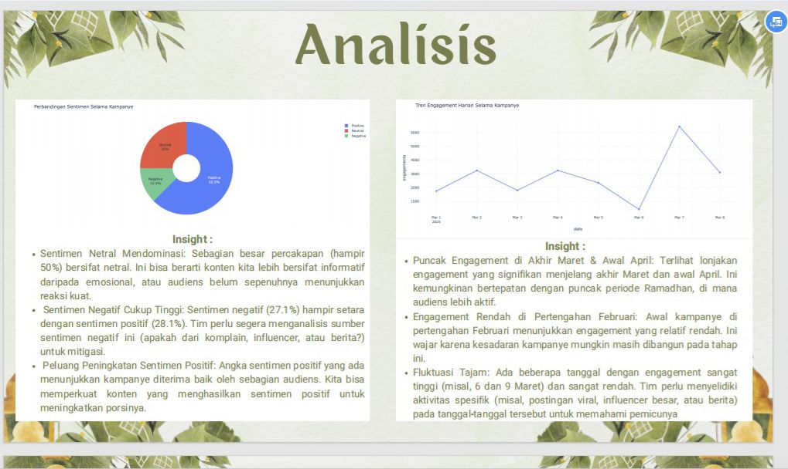
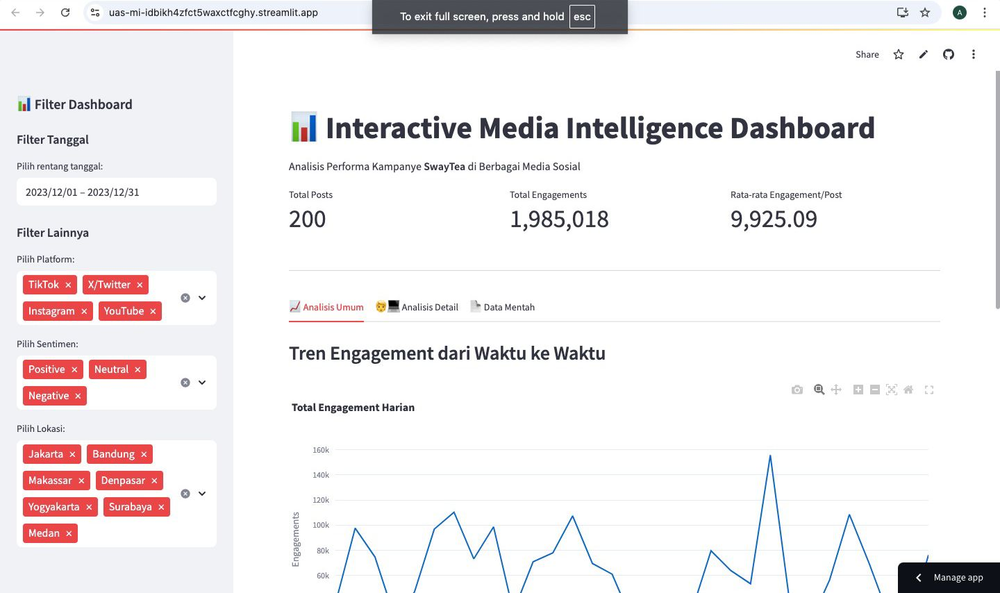
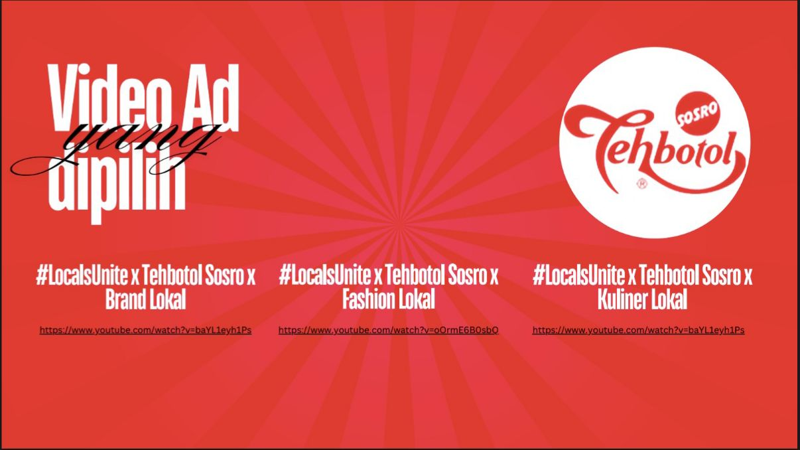

ABOUT ME!
Hai, saya Bimantoro Setyo Hutomo, seorang mahasiswa Produksi Media di Universitas Indonesia. Meskipun jurusan saya telah mengajarkan saya cara membuat konten yang menarik, minat saya yang sebenarnya terletak pada pemahaman mengapa konten tersebut beresonansi dengan audiens. Keingintahuan ini mendorong fokus saya pada analisis data, di mana saya senang menggali perilaku pengguna, pola keterlibatan, dan tren pasar. Saya bertujuan untuk menggunakan wawasan berbasis data untuk menjembatani kesenjangan antara ide-ide kreatif dan kesuksesan strategis, mengubah data mentah menjadi peta jalan untuk pertumbuhan.
SOFT SKILLS
PROJECTS
PROJECT #1: ANALISIS KAMPANYE DIGITAL "TASTYIFTAR"
Description: Dashboard interaktif ini menyajikan analisis mendalam terhadap performa kampanye digital ''Tastyiftar” selama Ramadhan 2025. Analisis mencakup metrik kunci seperti tren engagement, sentimen audiens, performa platform, dan demografi lokasi untuk memberikan wawasan strategis yang dapat ditindaklanjuti oleh tim marketing.
PROJECT #2: DASHBOARD MEDIA INTELLIGENCE "SWAYTEA"
Description: Proyek ini adalah sebuah dashboard media intelligence interaktif yang dibangun untuk menganalisis performa kampanye brand "SwayTea". Tujuannya adalah untuk mengubah data mentah yang tersebar dari berbagai platform sosial media menjadi wawasan yang terpusat dan mudah dipahami. Fitur utamanya meliputi visualisasi tren engagement, sentimen sentimen, perbandingan performa antar platform, dan identifikasi influencer kunci. Dibangun menggunakan Python dengan library Streamlit, Pandas, dan Plotly.
PROJECT #3: AI-POWERED VIDEO ANALYSIS & OPTIMIZATION
Description: Proyek AI-Powered Video Analysis and Optimization adalah sebuah sistem cerdas yang dirancang untuk meningkatkan performa konten video secara otomatis. Dengan memanfaatkan model computer vision dan machine learning, sistem ini menganalisis berbagai elemen dalam video—seperti deteksi objek, analisis sentimen melalui ekspresi wajah, dan ritme visual—lalu mengkorelasikannya dengan data engagement penonton.